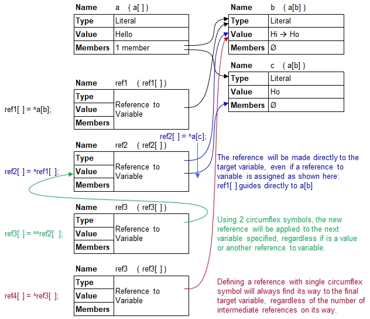

Introduction
Two flavors of copying references exist:
- If =^ is used, then the referencing process passes through all intermediate references and establishes the link to the target variable directly.
- If =^^ is used, then the reference will be made on the specified intermediate reference.
The 1st choice ensures that all referncing are fast and direct. The 2nd choice provides the flexibiltiy to make modifications on the intermediate
references such as redirecting only the intermediate reference and not all intial references attached to them.

a[] = Hello;
a[b] = Hi;
ref1[] =^ a[b]; // References a[b]
ref2[] =^ ref1[]; // References a[b] directly
ref3[] =^^ ref2[]; // References ref2[]
ref4[] =^ ref3[]; // References a[] directly
ref3[] = He;
echo( a[b],", ",ref1[],", ",ref2[],", ",ref3[] ); // 4 x He
a[c] = Ho; // Visible in ref[2] and ref[3]
ref2[] =^ a[c]; // Detach ref2[] from a[b] and link to a[c]
echo( ref1[],", ",ref2[],", ",ref3[],", ",ref4[] ); // He, Ho, Ho, HeHe, He, He, He
He, Ho, Ho, He